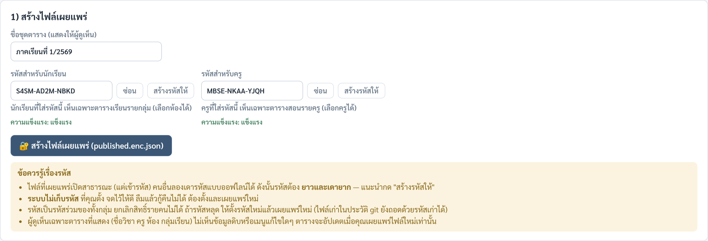

คู่มือเริ่มต้นใช้งาน
ระบบจัดตารางสอนอัตโนมัติ — อ่านสั้นๆ แล้วลองทำตามได้เลย
เวอร์ชัน 1.6
สำหรับผู้ดูแลระบบ
คุณใส่ข้อมูล ครู กลุ่มเรียน วิชา ห้องเรียน แล้วระบบจัดตารางให้เอง โดยครู นักเรียน และห้องไม่ชนกัน ใช้ฟรี ไม่ต้องสมัคร ข้อมูลอยู่ในเครื่องของคุณเท่านั้น
ลองใช้ใน 5 นาที ยังไม่ต้องกรอกข้อมูลจริง ใช้ข้อมูลสมมติ
การ์ด "เริ่มต้นใช้งาน" บนหน้า Dashboard ติ๊กถูกให้เองเมื่อทำแต่ละขั้นเสร็จ
ผลหลังจัดตาราง: วิชาที่สอนติดกันรวมเป็นช่องเดียว (เช่น "3 คาบติดกัน") ใต้ตารางมีสรุปจำนวนคาบต่อสัปดาห์
ลองเสร็จแล้ว อยากเริ่มกรอกข้อมูลจริง? เมนู กรอกข้อมูล › กด ล้างข้อมูลทั้งหมด แล้วทำตามหน้า 2 • ข้อมูลเก็บเฉพาะในเบราว์เซอร์เครื่องนี้ ไม่ส่งไปที่ใด กด สำรองข้อมูล (JSON) เป็นระยะ เพราะล้างเบราว์เซอร์แล้วข้อมูลหาย
ใช้กับโรงเรียนจริง เตรียมข้อมูลก่อน แล้วทำทีละขั้น
| เตรียมไว้ | ต้องมีอะไรบ้าง | ตัวอย่าง |
|---|
| คาบเรียน | วันที่เปิดสอน, จำนวนคาบต่อวัน, เวลาแต่ละคาบ, พักเที่ยงหลังคาบที่เท่าไร | จันทร์–ศุกร์, 8 คาบ, พัก หลังคาบ 4 |
| ครู | ชื่อ และหน้าที่ (สอนหลัก / สอนร่วม) | นางสมศรี ใจดี (สอนหลัก) |
| กลุ่มเรียน | รหัส ชื่อ สาขาวิชา | 6701 • ปวช.1/1 • การบัญชี |
| วิชา | รหัส ชื่อ จำนวนคาบต่อสัปดาห์ | ภาษาไทย • 2 คาบ |
| อาคาร/ห้อง | ชื่ออาคาร จำนวนชั้น จำนวนห้อง ต่อชั้น | อาคาร 1 • 3 ชั้น • ชั้นละ 4 ห้อง |
| กรณีพิเศษ (ถ้ามี) | คาบที่มีเวลาตายตัว เช่น กิจกรรม ประชุมครู | ทุกวัน คาบที่ 1 |
ขั้น 1 ตั้งค่าคาบเรียน เมนู กรอกข้อมูล › ตั้งค่าคาบเรียน (ต้องทำก่อน)
- 1ติ๊กวันที่เปิดสอน
- 2ใส่จำนวนคาบต่อวัน
- 3เลือกพักเที่ยงหลังคาบที่เท่าไร (ไม่มีพักก็เลือก "ไม่มีพักเที่ยง")
- 4ใส่เวลาเริ่ม–จบของทุกคาบ (ภาพแสดงแค่บางคาบ)
- 5กด บันทึกการตั้งค่า
ขั้น 2 เพิ่ม ครู กลุ่มเรียน วิชา อาคาร เมนู กรอกข้อมูล › แท็บละหนึ่งอย่าง
- 1
พิมพ์ทีละรายการ แล้วกดปุ่มเพิ่ม เหมาะกับข้อมูลไม่เยอะ
- 2
ข้อมูลเยอะ? กด Template เลือก Excel ดาวน์โหลดไฟล์ไปกรอก
- 3
กรอกเสร็จ กด Import จากไฟล์ ระบบบอกเลขแถวที่ผิด และนำเข้าแถวที่ถูกให้
ข้อควรรู้เมื่อนำเข้าไฟล์: Import ครูและกลุ่มเรียนก่อนกรณีพิเศษ • CSV ภาษาไทยให้บันทึกเป็น "CSV UTF-8" • ไฟล์ไม่เกิน 5 MB • กรอกผิด: ยังไม่มีปุ่มแก้ไข ให้กด ลบ แล้วเพิ่มใหม่
ขั้น 4 จัดตาราง และอ่านผล Dashboard
- เลือก เวลาประมวลผลสูงสุด (ยิ่งนาน ตารางยิ่งสวย) แล้วกด จัดตารางอัตโนมัติ ระหว่างรันกดหยุดได้
- จัดไม่ได้ N คาบ? อ่านเหตุผลในกล่องสีแดง เช่น ครูมีคาบว่างไม่พอ → ลดภาระ เพิ่มครู หรือเปลี่ยนห้อง แล้วจัดใหม่
- ทุกช่วงที่สอนติดกันไม่เกิน 4 คาบ ไม่ข้ามพักเที่ยง วิชาเกิน 4 คาบแบ่งเป็นหลายช่วง (เช่น 5 = 3+2) คนละวัน • จัดใหม่ทีไรตารางอาจต่างจากเดิม จึงไม่ควรจัดใหม่หลังประกาศตารางแล้ว
ขั้น 3 กำหนดการเรียน ส่วนที่คนสับสนบ่อยที่สุด — อ่านตัวอย่างนี้ก่อน
1 รายการ = วิชา 1 วิชา ที่กลุ่มเรียนเรียนกับครู ในห้องที่กำหนด
ตัวอย่าง: "การบัญชีเบื้องต้น (4 คาบ) • ครูสุนีย์ • กลุ่ม ปวช.1/1 และ ปวช.1/2 เรียนพร้อมกัน • อาคาร 1 ห้อง 101" นับเป็น 1 รายการ ต้องทำให้ครบ ทุกวิชาของทุกกลุ่ม (จำนวนรายการ ≈ กลุ่มเรียน × วิชา)
กรณีพิเศษ คาบที่มีเวลาตายตัว ระบบวางก่อนวิชาอื่นเสมอ
- 1ตั้งชื่อ และจำนวนคาบ
- 2พิมพ์เงื่อนไขเป็นภาษาไทย
- 3ดูแถบเขียว "ระบบเข้าใจว่า ..." ว่าตรงกับที่ต้องการ แล้วกดเพิ่ม
| พิมพ์ว่า | ความหมาย |
|---|
ทุกวันคาบที่ 1 | ทุกวัน คาบ 1 |
วันพุธ คาบ 7-8 | พุธ คาบ 7 และ 8 |
จันทร์-ศุกร์ คาบสุดท้าย | คาบสุดท้ายของวัน |
วันศุกร์ ช่วงบ่าย | หลังพักเที่ยงทั้งหมด |
จันทร์ คาบ 1; พุธ คาบ 3 | หลายเงื่อนไข คั่นด้วย ; |
ใช้กับใคร: ไม่เลือกอะไร = ทุกกลุ่มและทุกครู เลือกกลุ่มเรียนและ/หรือครู = เฉพาะที่เลือก (เช่น ครูคนหนึ่งประชุมทุกวันอังคาร คาบ 1–2)
เผยแพร่ให้นักเรียนและครู ไม่บังคับ — ผู้ดูใส่รหัสแล้วดูได้อย่างเดียว

เมนู "เผยแพร่ตาราง"
- 1ตั้งชื่อชุดตาราง เช่น ภาคเรียนที่ 1/2569
- 2กด สร้างรหัสให้ ทั้งรหัสนักเรียนและรหัสครู (ต้องไม่เหมือนกัน) แล้ว จดรหัสไว้ ระบบไม่เก็บและกู้คืนไม่ได้
- 3กด สร้างไฟล์เผยแพร่ ได้ไฟล์
published.enc.json (เข้ารหัสแล้ว เปิดอ่านตรงๆ ไม่ได้ เป็นเรื่องปกติ)
นำไฟล์ไปให้ผู้ดูเปิดได้ เลือกทางใดทางหนึ่ง
ทาง A: วางไว้บนเว็บ (แนะนำ) ผู้ดูแค่เปิดลิงก์แล้วใส่รหัส
- เปิดรีโพของคุณบน GitHub › โฟลเดอร์
public › published
- กด Add file › Upload files ลากไฟล์
published.enc.json มาวาง (ชื่อต้องตรง เพื่อทับไฟล์เดิม)
- กด Commit changes รอ 1–2 นาที ให้แท็บ Actions ขึ้นเครื่องหมายถูกสีเขียว
- เปิดเว็บทดสอบด้วยรหัสทั้งสอง ก่อนแจก
ทาง B: ส่งไฟล์ทางไลน์/อีเมล ไม่ต้องแตะ GitHub
- ส่งไฟล์ให้ผู้ดูเป็น ไฟล์ (ไม่ใช่รูป)
- ผู้ดูบันทึกไฟล์ลงเครื่อง เปิดเว็บ กด "มีไฟล์ตารางที่ได้รับ? เลือกไฟล์" แล้วใส่รหัส
- มือถือหาไฟล์ยากกว่า และต้องเลือกไฟล์ใหม่ทุกครั้ง ถ้าคนเยอะแนะนำทาง A
แจกลิงก์และรหัส แยกกลุ่ม: รหัสครูให้ครู รหัสนักเรียนให้นักเรียน (ปุ่ม "คัดลอกข้อความ" ในหน้าเผยแพร่ช่วยให้) แจก คู่มือนักเรียน/ครู 1 หน้า ไปด้วย (ไฟล์ viewer-guide.pdf) ตารางเปลี่ยน → สร้างไฟล์ใหม่ เผยแพร่ซ้ำ แล้วแจ้งผู้ดูรีเฟรช
ควรรู้ ข้อจำกัดของการแบ่งกลุ่มด้วยรหัส
- รหัสเป็นรหัสร่วมของทั้งกลุ่ม: นักเรียนเห็นตารางทุกห้องได้ ครูเห็นตารางครูทุกคนได้ ยกเลิกสิทธิ์รายคนไม่ได้ ถ้ารหัสหลุดให้ตั้งรหัสใหม่แล้วเผยแพร่ใหม่
- ลืมรหัสนักเรียน/ครู: ตั้งใหม่และเผยแพร่ใหม่ • ลืมรหัสล็อกผู้ดูแล: ต้องรีเซ็ตเครื่อง (ข้อมูลในเครื่องหาย) จึงควรสำรองข้อมูลไว้เสมอ
คำศัพท์ ถามตอบเต็มอยู่ที่เมนู "วิธีใช้" ในเว็บ
| กลุ่มเรียน | ห้องเรียน/กลุ่มนักเรียนที่เรียนด้วยกัน เช่น ปวช.1/1 |
| กำหนดการเรียน | "วิชานี้ กลุ่มนี้ เรียนกับครูคนนี้ ในห้องนี้" 1 รายการ ใช้จัดตาราง |
| ครูสอนร่วม | ผู้ช่วยสอนที่อยู่ด้วยในคาบเดียวกัน (ครูทั้งสองไม่ว่างในคาบนั้น) |
| Template | ไฟล์ตัวอย่างที่มีหัวตาราง กรอกแล้วนำเข้าทีเดียวได้ (Excel / CSV / JSON) |